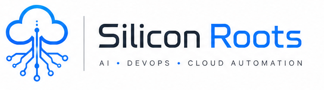

From Jenkins to Kubernetes. From On-Prem to Cloud. We build, automate, scale, and stabilize infrastructure.
Silicon Roots is a DevOps, SRE, and platform engineering services company helping startups and enterprises modernize infrastructure, automate delivery, improve reliability, and reduce operational complexity.
We specialize in cloud-native platforms, CI/CD automation, observability, Kubernetes operations, hybrid infrastructure, and enterprise DevOps transformation.
Comprehensive engineering capabilities to modernize your delivery.
Delivering high-performance infrastructure across sectors.
High-availability platforms for fast-scaling software companies.
Ultra-secure, compliant, and low-latency infrastructure.
Traffic-ready architectures designed for peak scaling events.
Modernizing legacy stacks into cloud-native environments.
Developer platforms that accelerate feature shipping.
Bridging on-premise datacenters with public clouds.
Reliability Mindset
Infrastructure as Code
Deployment Friction
Automation Driven
We design, build, and operate enterprise-grade infrastructure so your team can focus on shipping products.
We design and manage enterprise CI/CD platforms from on-prem Jenkins installations to modern cloud-native GitHub Actions.
Complete toolchain design and integration covering Vault, SonarQube, Nexus, Artifactory, and automated release workflows.
We build scalable internal developer platforms, enabling self-service infrastructure and golden path engineering.
Need Jenkins deployed inside your datacenter? We handle private networking, VMware, and bare-metal infrastructure modernization.
Comprehensive Linux server hardening, automated patching, NGINX reverse proxies, and SSL/TLS lifecycle automation.
Proactive alert engineering, tracing, incident response readiness, and uptime capacity planning for production stability.
Operational support, deployment, and automation for PostgreSQL, MongoDB, Redis, RabbitMQ, and Elasticsearch.
Strategic AWS, GCP, and Azure migrations, secure landing zones, automated IAM architectures, and infrastructure as code.
Real-time platform operations and reliability intelligence.
A true engineering partner focused on reliability, automation, and operational excellence.
From architecture to automation to production support.
Cloud-native, hybrid, and on-prem environments.
Manual operational work replaced with repeatable automation.
Engineering for uptime, resilience, and operational stability.
Developer productivity through scalable platforms.
Access control, secrets, compliance-conscious architecture.
Flexible engineering partnerships tailored to your business stage.
Architecture reviews and engineering strategy.
End-to-end implementation ownership.
Embedded DevOps/SRE teams.
Ongoing infrastructure support.
We are experts in the tools that power modern enterprise infrastructure.
Need DevOps transformation, Kubernetes operations, CI/CD modernization, Jenkins setup, observability engineering, or reliability support?
thesiliconroots@gmail.com